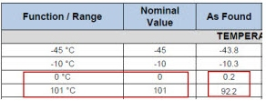
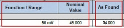

Monitoring and Test Equipment - Control
Purpose
This document provides information about these tool categories:
- indication use only equipment.
- essential monitoring and test equipment.
Maximum allowable calibration tolerance ranges are provided for essential monitoring and test equipment.
Reference Documentation
For further information regarding tool calibration, refer to these documents:
- BCCP0089 "Calibration of Monitoring and Measuring Equipment" located in EDMS.
- 7.02 "Test Equipment Acquisition, Calibration, and Repair" in the United States Customer Operations database.
- 7.03 "Out of Tolerance Evaluation Reports" in the United States Customer Operations database.
Equipment Chart
| Equipment | Measuring Process | Indication Use Only | Maximum Allowable Tolerance |
|---|---|---|---|
| Incubator Belt Tensioning Tool | all processes | Yes | NA |
| Thermocouple | transducer temperature | No | At the closest temperature above 37 °C and the closest temperature below 37 °C, the thermocouple reading is <+5 °C from expected.
Note: The lower temperature bound is not critical. The transducer temperature can cause a QC shift when set below 30 °C.
Example: The thermocouple measured +0.2 °C and -8.8 °C at the two temperatures surrounding 37 °C. This is within the Maximum Allowable Tolerance. Only positive bias of 5 °C or greater are outside the Maximum Allowable Tolerance.  |
| Torque Wrench | all processes | Yes | NA |
| Yokogawa Multimeter | power supply voltage | Yes | NA |
| substrate bubble detector | Yes | NA | |
| transducer temperature | No | At the DC voltage closest to 37 mV, the multimeter reading is <+5 mV with no lower voltage bound.
Note: The lower temperature bound is not critical. The transducer temperature can cause a QC shift when set below 30 °C. A negative tool bias is acceptable because it causes the transducer temperature to be set higher. Transducer settings above 39 °C do not cause assay imprecision or shifts.
Example: The voltage is -11 mV from the Nominal Value. This is within the Maximum Allowable Tolerance. Only positive bias of 5 mV or greater are outside the Maximum Allowable Tolerance.  |
|
| ultrasonics voltages | Yes | NA |